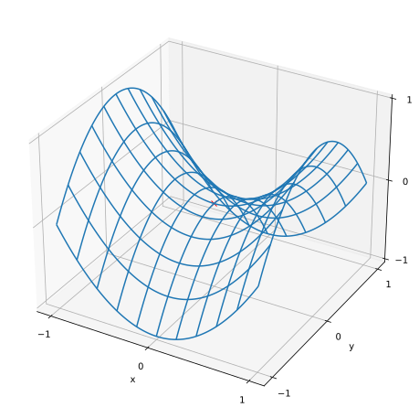

Data Science for Electron Microscopy
Lecture 2: Optimization, Regression, Sensor Fusion
Prof. Dr. Philipp Pelz
FAU Erlangen-Nürnberg
Institute of Micro- and Nanostructure Research


Optimization and Deep Learning
- Loss functions quantify model performance
- Also called objective functions
- Most optimization algorithms minimize (not maximize)
- To maximize: just flip the sign
Linear Regression
- Predicts numerical values
- House prices
- Hospital stay length
- Retail demand
- Key terminology:
- Training dataset: collection of examples
- Features: input variables (e.g., area, age)
- Labels: target values to predict (e.g., price)
Model Basics
- Assumes linear relationship between features and target
- Key components:
- Weights (\(w\)): influence of each feature
- Bias (\(b\)): base value when features are zero
- Mathematical form: \[\hat{y} = \mathbf{w}^\top \mathbf{x} + b\]
Loss Function
- Measures prediction quality
- Squared error for each example: \[l^{(i)}(\mathbf{w}, b) = \frac{1}{2} (\hat{y}^{(i)} - y^{(i)})^2\]
- Total loss: average over all examples
- Quadratic form:
- Penalizes large errors heavily
- Can be sensitive to outliers
Training Methods
- Analytic Solution
- Direct formula when possible
- \(\mathbf{w}^* = (\mathbf X^\top \mathbf X)^{-1}\mathbf X^\top \mathbf{y}\)
- Only works for simple models
- Minibatch Stochastic Gradient Descent
- More practical for complex models
- Process:
- Sample random minibatch
- Compute gradient
- Update parameters
- Key hyperparameters:
- Learning rate (\(\eta\))
- Minibatch size (typically 32-256)
Vectorization
Critical for efficient computation
Example: Vector addition
Benefits:
- Order-of-magnitude speedups
- Reduced code complexity
- Better portability
Statistical Motivation
- Normal distribution connection: \[p(x) = \frac{1}{\sqrt{2 \pi \sigma^2}} \exp\left(-\frac{1}{2 \sigma^2} (x - \mu)^2\right)\]
- Maximum likelihood interpretation:
- Assumes Gaussian noise
- Minimizing squared error = maximizing likelihood
- Provides theoretical foundation
Linear Regression as Neural Network
- Single-layer neural network
- Structure:
- Input layer: features (\(x_1, ..., x_d\))
- Output layer: single neuron
- Direct connections (no hidden layers)
- Foundation for more complex networks
Summary
- Linear regression: foundation of machine learning
- Key components:
- Parametric form
- Differentiable objective
- Optimization methods
- Evaluation metrics
- Building block for more complex models
Exercises
- Assume that we have some data \(x_1, \ldots, x_n \in \mathbb{R}\). Our goal is to find a constant \(b\) such that \(\sum_i (x_i - b)^2\) is minimized.
- Find an analytic solution for the optimal value of \(b\).
- How does this problem and its solution relate to the normal distribution?
- What if we change the loss from \(\sum_i (x_i - b)^2\) to \(\sum_i |x_i-b|\)? Can you find the optimal solution for \(b\)?
- Prove that the affine functions that can be expressed by \(\mathbf{x}^\top \mathbf{w} + b\) are equivalent to linear functions on \((\mathbf{x}, 1)\).
- Assume that you want to find quadratic functions of \(\mathbf{x}\), i.e., \(f(\mathbf{x}) = b + \sum_i w_i x_i + \sum_{j \leq i} w_{ij} x_{i} x_{j}\). How would you formulate this in a deep network?
- Recall that one of the conditions for the linear regression problem to be solvable was that the design matrix \(\mathbf{X}^\top \mathbf{X}\) has full rank.
- What happens if this is not the case?
- How could you fix it? What happens if you add a small amount of coordinate-wise independent Gaussian noise to all entries of \(\mathbf{X}\)?
- What is the expected value of the design matrix \(\mathbf{X}^\top \mathbf{X}\) in this case?
- What happens with stochastic gradient descent when \(\mathbf{X}^\top \mathbf{X}\) does not have full rank?
- Assume that the noise model governing the additive noise \(\epsilon\) is the exponential distribution. That is, \(p(\epsilon) = \frac{1}{2} \exp(-|\epsilon|)\).
- Write out the negative log-likelihood of the data under the model \(-\log P(\mathbf y \mid \mathbf X)\).
- Can you find a closed form solution?
- Suggest a minibatch stochastic gradient descent algorithm to solve this problem. What could possibly go wrong (hint: what happens near the stationary point as we keep on updating the parameters)? Can you fix this?
- Assume that we want to design a neural network with two layers by composing two linear layers. That is, the output of the first layer becomes the input of the second layer. Why would such a naive composition not work?
- What happens if you want to use regression for realistic price estimation of houses or stock prices?
- Show that the additive Gaussian noise assumption is not appropriate. Hint: can we have negative prices? What about fluctuations?
- Why would regression to the logarithm of the price be much better, i.e., \(y = \log \textrm{price}\)?
- What do you need to worry about when dealing with pennystock, i.e., stock with very low prices? Hint: can you trade at all possible prices? Why is this a bigger problem for cheap stock? For more information review the celebrated Black–Scholes model for option pricing :cite:
Black.Scholes.1973.
- Suppose we want to use regression to estimate the number of apples sold in a grocery store.
- What are the problems with a Gaussian additive noise model? Hint: you are selling apples, not oil.
- The Poisson distribution captures distributions over counts. It is given by \(p(k \mid \lambda) = \lambda^k e^{-\lambda}/k!\). Here \(\lambda\) is the rate function and \(k\) is the number of events you see. Prove that \(\lambda\) is the expected value of counts \(k\).
- Design a loss function associated with the Poisson distribution.
- Design a loss function for estimating \(\log \lambda\) instead.
Goal of Optimization
- Different goals in optimization vs deep learning:
- Optimization: Minimize objective function
- Deep learning: Find suitable model with finite data
- Key concepts:
- Empirical risk: Average loss on training data
- Risk: Expected loss on entire population
- To illustrate different goals:
- Empirical risk: Average loss on training dataset
- Risk: Expected loss on entire population
- Two functions:
- Risk function
f - Empirical risk function
g(less smooth due to finite data)
- Risk function
- Visualization shows:
- Minimum of empirical risk ≠ minimum of risk
- Training data minimum may differ from true minimum
def annotate(text, xy, xytext): #@save
d2l.plt.gca().annotate(text, xy=xy, xytext=xytext,
arrowprops=dict(arrowstyle='->'))
x = d2l.arange(0.5, 1.5, 0.01)
d2l.set_figsize((4.5, 2.5))
d2l.plot(x, [f(x), g(x)], 'x', 'risk')
annotate('min of\nempirical risk', (1.0, -1.2), (0.5, -1.1))
annotate('min of risk', (1.1, -1.05), (0.95, -0.5))Optimization Challenges in Deep Learning
- Focus on optimization algorithm performance
- Most objective functions:
- Are complicated
- Lack analytical solutions
- Require numerical optimization
- Three major challenges:
- Local minima
- Saddle points
- Vanishing gradients
Local Minima
- Definition:
- \(f(x)\) is local minimum if smaller than nearby points
- Global minimum: smallest value over entire domain
- Example function: \[f(x) = x \cdot \textrm{cos}(\pi x) \textrm{ for } -1.0 \leq x \leq 2.0\]
- In deep learning:
- Models often have many local optima
- Gradient approaches zero near local minimum
- Minibatch SGD can help escape local minima
- Natural gradient variation provides “noise”
- Can dislodge parameters from local minima
Saddle Points
- Characteristics:
- All gradients vanish
- Neither global nor local minimum
- Example: \(f(x) = x^3\)
- First and second derivatives vanish at \(x=0\)
- Optimization can stall here
- Higher dimensions:
- More complex (e.g., \(f(x,y) = x^2 - y^2\))
- More likely to encounter saddle points
- Hessian matrix eigenvalues determine type:
- All positive: local minimum
- All negative: local maximum
- Mixed signs: saddle point
x, y = d2l.meshgrid(
d2l.linspace(-1.0, 1.0, 101), d2l.linspace(-1.0, 1.0, 101))
z = x**2 - y**2
ax = d2l.plt.figure(figsize=(8,8)).add_subplot(111, projection='3d')
ax.plot_wireframe(x, y, z, **{'rstride': 10, 'cstride': 10})
ax.plot([0], [0], [0], 'rx')
ticks = [-1, 0, 1]
d2l.plt.xticks(ticks)
d2l.plt.yticks(ticks)
ax.set_zticks(ticks)
d2l.plt.xlabel('x')
d2l.plt.ylabel('y');
Vanishing Gradients
- Most insidious optimization problem
- Example: \(f(x) = \tanh(x)\)
- At \(x = 4\): gradient ≈ 0.0013
- Optimization stalls
- Historical context:
- Major challenge before ReLU activation
- Made deep learning training difficult
Summary
- Key takeaways:
- Training error minimization ≠ best generalization
- Many local minima exist
- Saddle points are common in non-convex problems
- Vanishing gradients can stall optimization
- Good news:
- Robust algorithms exist
- Perfect solutions not always necessary
- Local optima can be useful
- Many practical solutions available
Exercises
- Consider a simple MLP with a single hidden layer of, say, \(d\) dimensions in the hidden layer and a single output. Show that for any local minimum there are at least \(d!\) equivalent solutions that behave identically.
- Assume that we have a symmetric random matrix \(\mathbf{M}\) where the entries \(M_{ij} = M_{ji}\) are each drawn from some probability distribution \(p_{ij}\). Furthermore assume that \(p_{ij}(x) = p_{ij}(-x)\), i.e., that the distribution is symmetric (see e.g.,
Wigner.1958for details).- Prove that the distribution over eigenvalues is also symmetric. That is, for any eigenvector \(\mathbf{v}\) the probability that the associated eigenvalue \(\lambda\) satisfies \(P(\lambda > 0) = P(\lambda < 0)\).
- Why does the above not imply \(P(\lambda > 0) = 0.5\)?
- What other challenges involved in deep learning optimization can you think of?
- Assume that you want to balance a (real) ball on a (real) saddle.
- Why is this hard?
- Can you exploit this effect also for optimization algorithms?
Application: Sensor Fusion
References

©Philipp Pelz - FAU Erlangen-Nürnberg - Data Science for Electron Microscopy